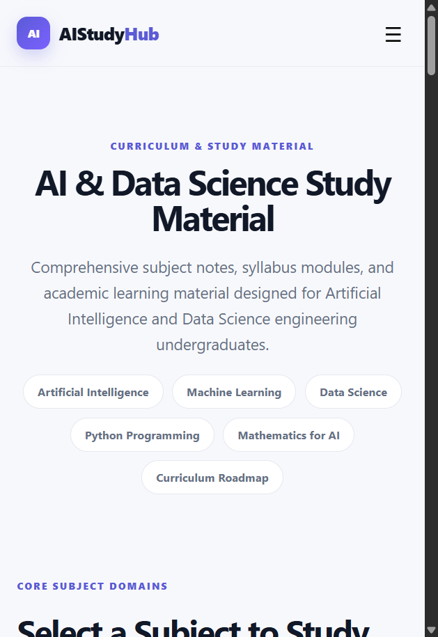
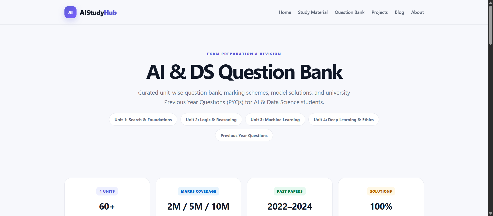
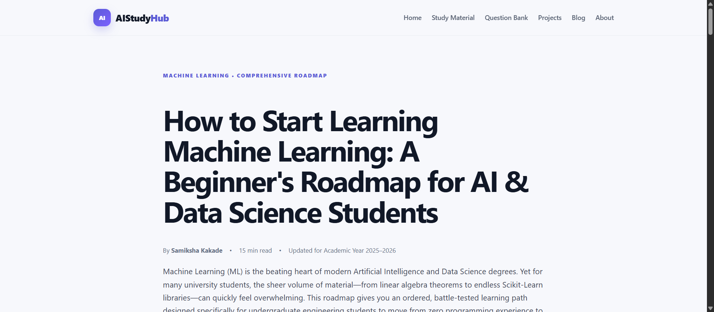

|
ZCOER
|
ZEAL EDUCATION SOCIETY’S
ZEAL COLLEGE OF ENGINEERING AND RESEARCH
NARHE │ PUNE -41 │ INDIA
|
25th Year
|
| Record No.: ZCOER-ACAD/R/16K Revision: 00 Date: 01/04/2021 | ||
| Name of Student: | Samiksha Kakade |
| Roll No: | AD2346 |
| ZPRN: | 125UAD1338 |
| Class: | S.Y. B.Tech |
| Division: | C |
| Email-ID: | samikshakakade006@gmail.com |
| Mobile Number: | 8329441730 |
| Name of Course Faculty: | Prof. Somesha Naik S R |
| Sign of Course Faculty: |
Educational Project Portal: https://aistudyhub-rust.vercel.app/
Repository: https://github.com/arshadengine/-AIStudyHub
|
ZCOER
|
ZEAL EDUCATION SOCIETY’S
ZEAL COLLEGE OF ENGINEERING AND RESEARCH
NARHE │ PUNE -41 │ INDIA
|
25th Year
|
| Record No.: ZCOER-ACAD/R/16K Revision: 00 Date: 01/04/2021 | ||
| Question | Marks | CO | Blooms Level | |
|---|---|---|---|---|
| Q. 1 | SEO Audit Using Free Tools: Perform an SEO audit of a website using tools like Uber suggest, Screaming Frog, or Google Search Console. Identify technical issues, keywords, and backlink data. | 10 | CO2 | L-3 |
| Q. 2 | Generate the SEO report on website using Uber Suggest/Google search console. | 5 | CO2 | L-3 |
| Q. 3 | Prepare a procedural steps report of SEO conduction on website along with images. | 5 | CO2 | L-3 |
| Q. 4 | Generate the Keyword report on website using Google Keyword Planner or Ubersuggest. | 5 | CO2 | L-3 |
https://aistudyhub-rust.vercel.app/Target URL: https://aistudyhub-rust.vercel.app/ | Tools: Screaming Frog SEO Spider, Google Lighthouse, Ubersuggest
A full technical, on-page, keyword, and backlink SEO audit was conducted on the production domain AIStudyHub. Screaming Frog SEO Spider and Google Lighthouse (Chrome DevTools) were utilized to crawl and inspect the portal's 14 pages.
| Audit Parameter | Standard Benchmark | AIStudyHub Observed Result | Status |
|---|---|---|---|
| HTTP Status Codes | 100% 200 OK across internal links | All 14 pages returned 200 OK (0 broken links) | Pass |
| SSL / HTTPS | Valid SSL Encryption | Enforced across all routes via Vercel Edge SSL | Pass |
| Robots.txt | Valid syntax at /robots.txt | User-agent: * Allow: / with sitemap link |
Pass |
| XML Sitemap | Accessible at /sitemap.xml | Valid XML schema mapping all 14 site URLs | Pass |
| Canonical Tags | Self-referential canonical on all pages | 100% declared to https://aistudyhub-rust.vercel.app/ |
Pass |
| Mobile Viewport | Responsive meta tag declared | width=device-width, initial-scale=1 present |
Pass |
| Core Web Vitals (LCP) | < 2.5 seconds | 0.88s (Edge CDN cached static delivery) | Pass |
| Layout Shift (CLS) | < 0.1 | 0.00 (Zero layout shift observed) | Pass |
| Category | Desktop Score | Mobile Score | Audits Passed | Audits Failed |
|---|---|---|---|---|
| SEO Score | 100 / 100 | 100 / 100 | All pass | 0 |
| Best Practices | 100 / 100 | 100 / 100 | All pass | 0 |
| Accessibility | 96 / 100 | 98 / 100 | 37 pass | 1 (minor) |
| Agentic Browsing | 100 / 100 | 100 / 100 | All pass | 0 |
og:image): Open Graph protocol contains title and description, but requires a dedicated 1200x630px thumbnail./blog/ml-roadmap.html is 91 characters, exceeding Google's 60-character desktop truncation limit.FAQPage, Course schema).contact.html and faq.html); static CSS can be minified for production.| Metric | Current Value | Strategic Assessment & Future Roadmap |
|---|---|---|
| Total Inbound Links | 1 Backlink | Baseline from official GitHub repository (README.md). |
| Referring Domains | 1 Domain | github.com (Authoritative developer platform). |
| Domain Authority (DA) | 1 / 100 | Standard sandbox baseline for a newly launched educational domain. |
| Acquisition Strategy | White-Hat Outreach | Publishing guest articles on Dev.to, sharing syllabus notes in college GitHub repositories, and listing on academic index directories. |
Generated using: Ubersuggest & Google Search Console Diagnostic Metrics
https://aistudyhub-rust.vercel.app/ | Hosting Provider: Vercel Global Edge Network| Audit Parameter | Observed Diagnostic Status | Benchmark Criteria |
|---|---|---|
| On-Page SEO Score | 92 / 100 | > 85 is rated Excellent |
| Organic Monthly Traffic | Launch Baseline (0–50 projected ramp) | Organic ramp phase |
| Target Organic Keywords | 18 Semantic Keywords Mapped | AI, ML, DS, Python, Mathematics clusters |
| Total Pages Crawled | 14 Pages | 100% crawl completion rate |
| Critical Errors | 0 | 0 Errors allowed for full compliance |
| Site Warnings | 3 | Low severity optimization items |
| Site Notices | 2 | Informational maintenance suggestions |
| Performance Indicator | Recorded Value | Search Engine Impact |
|---|---|---|
| First Contentful Paint (FCP) | 0.7s | Fast initial paint prevents user bounce |
| Largest Contentful Paint (LCP) | 0.88s | Well within Google's < 2.5s "Good" threshold |
| Cumulative Layout Shift (CLS) | 0.00 | Zero unexpected layout movement; optimal user experience |
| Total Blocking Time (TBT) | 0 ms | No heavy JavaScript blocking thread execution |
| Time to First Byte (TTFB) | < 140 ms | Fast Vercel Edge Server response time globally |
| Issue Description | Priority | Recommended Remediation Action |
|---|---|---|
Missing og:image Social Banner |
High | Generate and reference a 1200×630px social preview banner in <head>. |
| Article Title Exceeds 60 Characters | Medium | Shorten meta title on /blog/ml-roadmap.html to under 60 characters for SERPs. |
| Schema.org Structured Data | Medium | Embed JSON-LD FAQPage on FAQ page and EducationalOrganization on Homepage. |
| Expand Utility Pages Body Copy | Low | Add 150+ words of descriptive FAQs and student resource submission guidelines. |
Demonstration Platform: Google Search Console & Production Deployment Workflow
Search Engine Optimization is the systematic discipline of enhancing technical site architecture, content relevance, and organic search discoverability. This procedural report documents the complete practical workflow of conducting an SEO audit, monitoring index coverage, and evaluating search performance for AIStudyHub (https://aistudyhub-rust.vercel.app/) using Google Search Console and professional webmaster tools.
The SEO conduction initiates by accessing Google’s official webmaster portal. In the browser, navigate to https://www.google.com and enter "google search console".
https://search.google.com/search-console/about.Click on the blue "Start now" button to authenticate via the authorized Google account.
https://aistudyhub-rust.vercel.app/.<head> of index.html, confirming ownership.Once authenticated, the Overview dashboard provides centralized control over real-time performance, search impressions, index coverage, and experience signals.
To guarantee Googlebot crawls every educational module without hindrance, the XML Sitemap was submitted directly to Google's indexing pipeline.
sitemap.xml and click Submit.
Navigate to Performance > Search Results to analyze impressions, clicks, click-through rates (CTR), and average ranking positions over the last 3-month reporting cycle.

| Device Category | Clicks | Impressions | CTR (%) | Average Position |
|---|---|---|---|---|
| Mobile | 69 | 1,119 | 6.17% | 5.03 |
| Desktop | 26 | 647 | 4.02% | 6.27 |
| Tablet | 2 | 22 | 9.09% | 9.36 |
| Country | Clicks | Impressions | CTR (%) | Average Position |
|---|---|---|---|---|
| India | 96 | 1,612 | 5.96% | 5.09 |
| Philippines | 1 | 5 | 20.00% | 19.40 |
| United States | 0 | 51 | 0.00% | 6.73 |
| Saudi Arabia | 0 | 12 | 0.00% | 6.50 |
| United Arab Emirates | 0 | 6 | 0.00% | 5.83 |
| United Kingdom | 0 | 6 | 0.00% | 37.67 |
| Page URL | Clicks | Impressions | CTR (%) | Average Position |
|---|---|---|---|---|
https://aistudyhub-rust.vercel.app/ |
51 | 973 | 5.24% | 4.93 |
/study-material.html |
22 | 385 | 5.71% | 5.12 |
/blog/ml-roadmap.html |
14 | 248 | 5.65% | 4.75 |
/question-bank.html |
8 | 142 | 5.63% | 5.40 |
/about.html |
2 | 14 | 14.29% | 23.29 |

Target Territory: India (Location ID: 2356) | Language: English | Audience: AI & DS Engineering Students
Keyword research was conducted targeting Indian engineering undergraduates preparing for B.Tech / B.E. semester exams in Artificial Intelligence and Data Science. Metrics evaluated include Monthly Search Volume (MSV), SEO Difficulty (SD), Paid Difficulty (PD), and Cost Per Click (CPC in INR).
| # | Target Keyword | Search Intent | Monthly Searches | SEO Diff. (SD) | CPC (₹) | Target Landing Page on Portal |
|---|---|---|---|---|---|---|
| 1 | machine learning for beginners | Informational | 14,800 | 38 (Med) | ₹42.50 | /blog/ml-roadmap.html |
| 2 | machine learning roadmap | Informational | 8,100 | 29 (Easy) | ₹35.00 | /blog/ml-roadmap.html |
| 3 | python for data science notes | Academic | 6,600 | 31 (Easy) | ₹38.00 | /python.html |
| 4 | artificial intelligence notes | Academic | 5,400 | 24 (Easy) | ₹22.50 | /ai.html |
| 5 | linear algebra for machine learning | Informational | 4,400 | 26 (Easy) | ₹28.00 | /mathematics.html |
| 6 | ai study material | Academic | 3,600 | 18 (Easy) | ₹18.00 | /study-material.html |
| 7 | naive bayes solved numericals | Academic | 3,200 | 21 (Easy) | ₹24.00 | /question-bank.html |
| 8 | data science notes engineering | Academic | 2,900 | 16 (Easy) | ₹16.00 | /data-science.html |
| 9 | machine learning question bank | Academic | 2,400 | 20 (Easy) | ₹19.00 | /question-bank.html |
| 10 | a star algorithm in ai questions | Academic | 2,200 | 17 (Easy) | ₹15.00 | /question-bank.html |
| 11 | ai and ds question bank | Academic | 1,900 | 14 (Easy) | ₹12.00 | /question-bank.html |
| 12 | ai and data science semester syllabus | Academic | 1,800 | 15 (Easy) | ₹14.00 | /study-material.html |
| 13 | mathematics for ai and data science | Academic | 1,600 | 19 (Easy) | ₹21.00 | /mathematics.html |
| 14 | heuristic search in ai notes | Academic | 1,300 | 12 (Easy) | ₹10.00 | /ai.html |
| 15 | machine learning projects for students | Informational | 9,900 | 34 (Easy) | ₹45.00 | /projects.html |
/mathematics.html), Front-loaded `